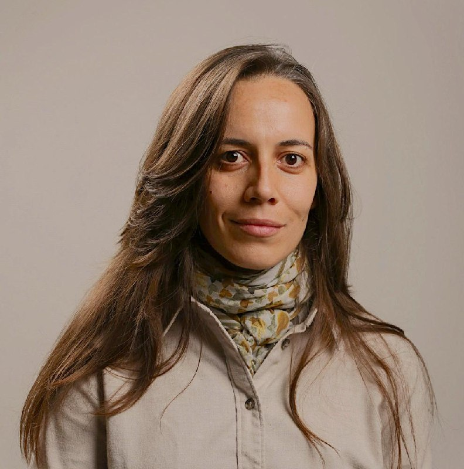
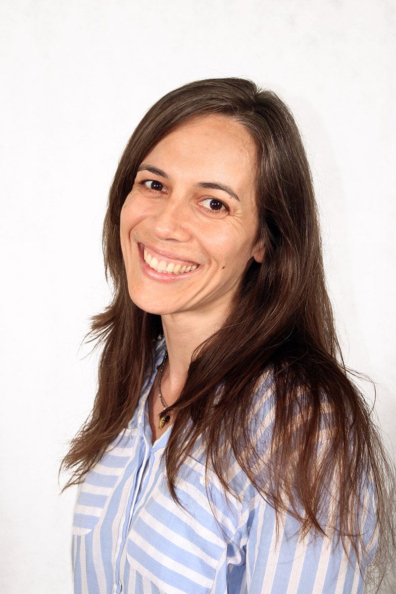
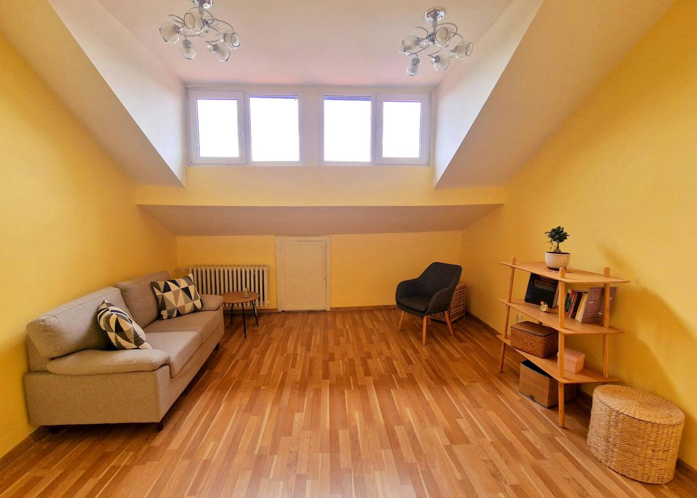

Тревожност и паник атаки
Работа с прекомерно напрежение, безпокойство, страхове и усещане за загуба на контрол.
Психолог и психотерапевт в София
Джулия Тодорова предлага индивидуални психологически консултации на живо за възрастни, родители и юноши — в спокойна, конфиденциална среда в центъра на София.


За мен
Завършила е бакалавърска програма по психология със специализация „Клинична психология“ и магистърска програма „Клинична психология – психоаналитична перспектива“ в Нов български университет.
Професионалният ѝ опит включва работа в Център за обществена подкрепа, клиника по психиатрия към ВМА и Национална специализирана болница за активно лечение на хематологични заболявания. Днес работи в самостоятелна практика.
С какво мога да помогна
Психотерапията не дава готови рецепти. Тя създава пространство, в което човек може да разбере по-добре себе си, изборите си и отношенията си с другите.
Работа с прекомерно напрежение, безпокойство, страхове и усещане за загуба на контрол.
Подкрепа при изтощение, натиск, липса на мотивация и усещане, че ресурсът е изчерпан.
Трудности в интимните отношения, семейството, приятелствата или общуването с колеги.
Работа с вътрешни конфликти, страх от конфронтация и трудност при вземане на решения.
Психологическа подкрепа при болезнени промени, скръб и житейски преходи.
Консултации за родители и работа с юноши при емоционални и поведенчески трудности.
Подход на работа
Подходът е насочен към повишаване на самоосъзнатостта и емоционалната проницателност — към по-пълно разбиране на мислите, чувствата и моделите, които влияят върху отношенията и усещането за себе си.
Срещите дават възможност вътрешните конфликти да бъдат изследвани внимателно, без натиск и без прибързани оценки, в сигурна и конфиденциална среда.
„Понякога първата стъпка не е да имаме готов отговор, а да имаме място, където можем спокойно да чуем себе си.“
Какво споделят клиентите
„Още след първите срещи почувствах повече яснота и спокойствие. Подходът беше внимателен, човешки и без натиск.“
Мария П.„Джулия ми помогна да разбера по-добре причините за тревожността си и да започна да гледам на себе си с повече търпение.“
Иван Д.„Чувствах се изслушана и приета. Срещите ми дадоха пространство да подредя мислите си в труден период.“
Елена К.„Много професионален и спокоен подход. Разговорите ми помогнаха да видя повтарящи се модели в отношенията си.“
Николай С.Кабинет и контакти
Консултациите се провеждат на живо в кабинет в центъра на София. За записване на час, моля обадете се директно.
Адрес: гр. София, бул. „Витоша“ 61
Работно време: 09:00–20:00 · последен начален час 19:00
Цена: €40 / консултация
